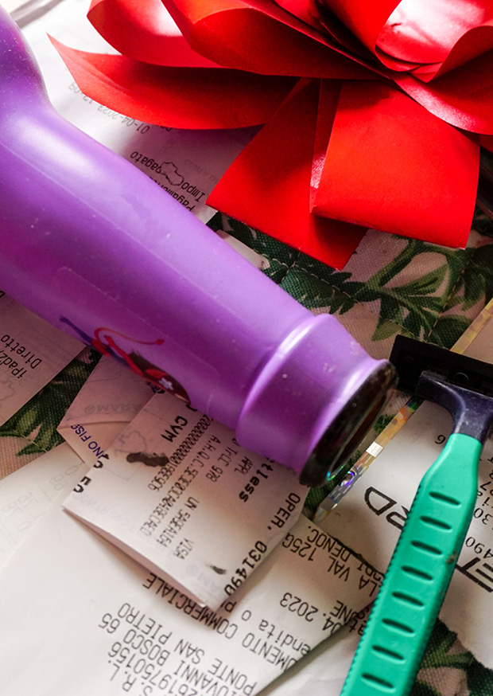
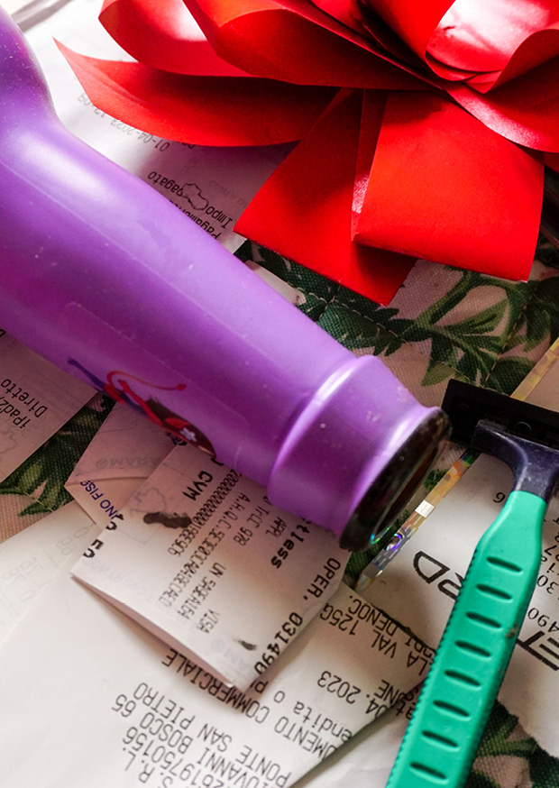
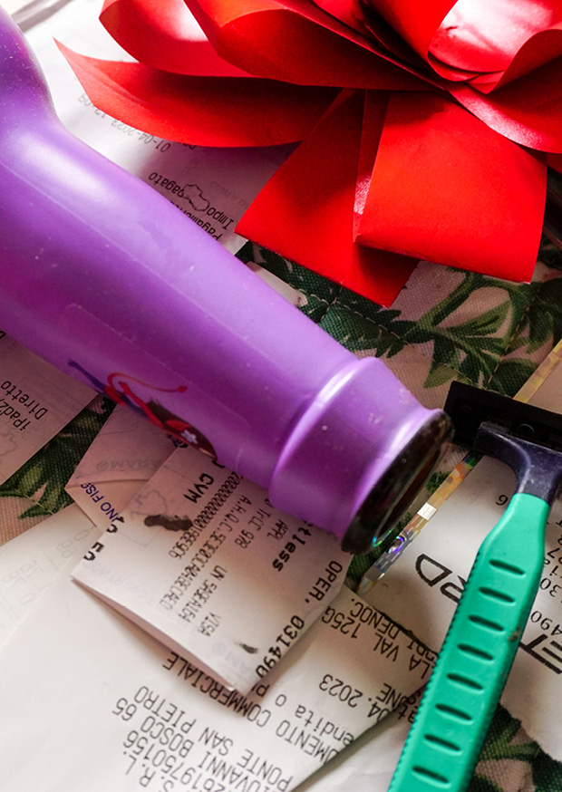

Projet personnel dans lequel sont mis en scène déchets et objets du quotidien. Inspiré des travaux de Jan Groover, cette série de photographies joue avec gros plans, couleurs et lumière afin de créer des univers singuliers.
